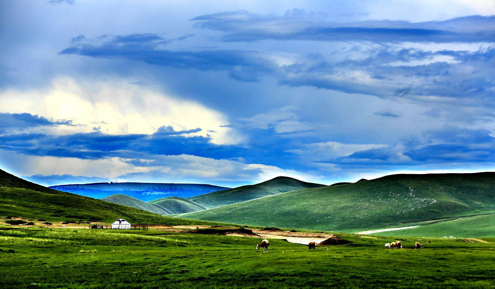

贡格尔草原
贡格尔草原位于克什克腾旗境内，达来诺日镇东部，距经棚镇47公里。是距离北京最近的内蒙古草原，融自然风光、蒙古族风情于一体。 这里的草原水草丰美，风光秀丽，数条河流牵沿串泊，达里诺尔、岗更诺尔、多伦诺尔三个姊妹湖由沙里河、亮子河、贡格尔河、耗来河串起，为贡格尔草原戴上了一条美丽的项链。春天，野花点点，丹顶鹤、白天鹅、大雁等候鸟大批集合在此。夏天，碧草连天，湖泊水碧。秋天，墨绿的蘑菇圈遍布原野。冬天，原野茫茫，一片银白。这里独特的草原民族风情和饮食文化，会让人体味到草原的宽广、博大。 草原上动植物资源丰富，共有野生植物500多种、野生动物300多种、鸟类130 多种，行走在草原上，不时有珍禽异鸟翩然而至，野免、野鹿等可爱的小动物更是时有出没。在草原东北部还有一片珍稀的红皮云杉林，是世界上仅存的两处红皮云杉之一，有“神树”、“活化石”之称。